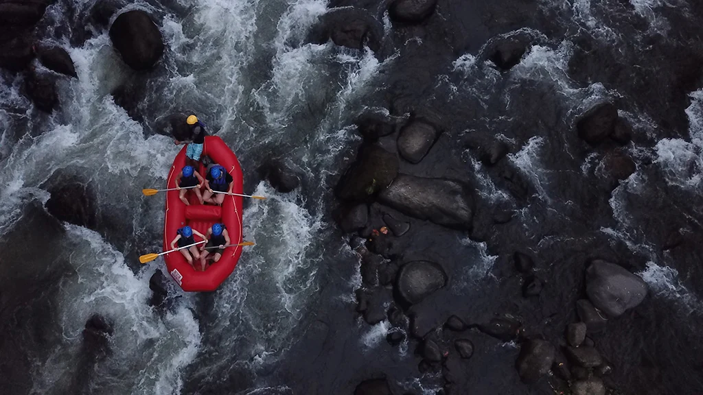
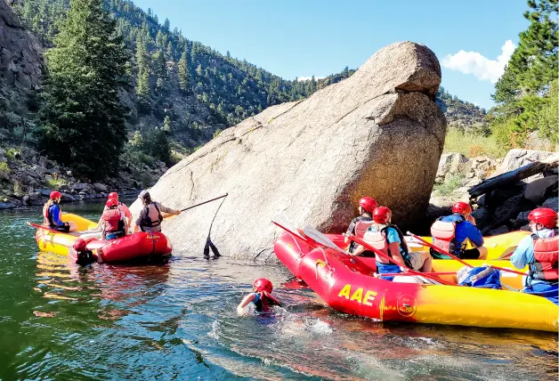
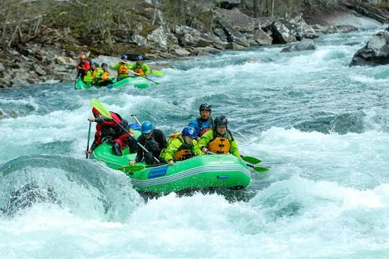
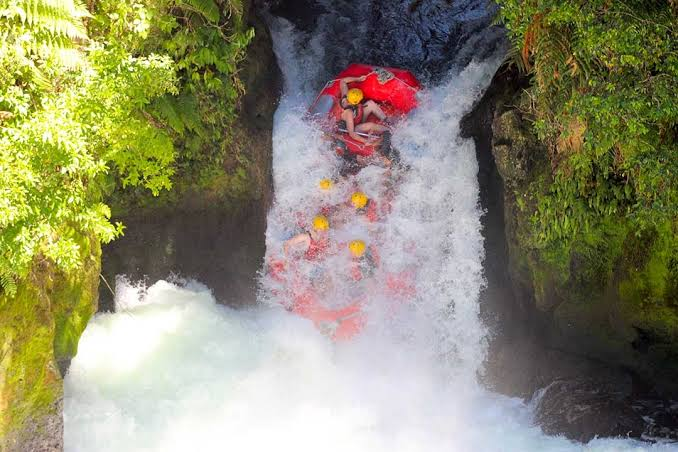

Trips with Dry Oar




Route difficulty information
| Difficulty | Easy | Moderate | Hard |
|---|---|---|---|
| Minimum age | None. Just don't let the baby fall out of the life jacket. | 8 years. Less if both quite experienced and daring. | 14 years. We could go down to 12 if they are proven. |
| Number of routes | 7 | 12 | 4 |
| Favorites | Rancho Verde Mine Saint Josephine's Pass |
Don Juan Gorge Deadwind Boulders |
Fern Cliffs The Melting Pot |